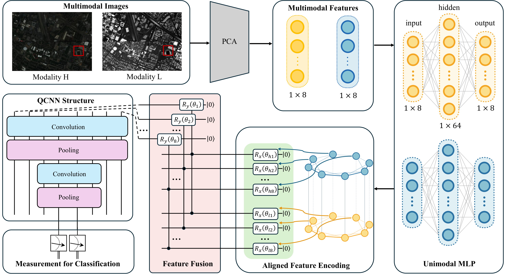
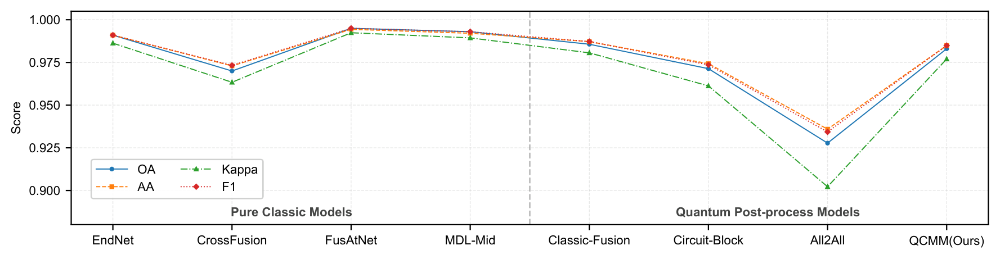

QCMM: 基于证据理论的量子多模态融合神经网络
2026.01我们提出 QCMM，一个基于特征纠缠的量子多模态融合框架，将 Dempster-Shafer 证据理论映射到量子电路上，实现可解释且参数高效的融合。
动机
经典多模态融合面临根本性困境：特征级融合（深度神经网络）精度高但属于参数爆炸的"黑盒"，而决策级融合（如贝叶斯推理、DS 理论）可解释但精度较低。
我们观察到 DS 理论的幂集结构与量子 Hilbert 空间的张量积结构之间存在数学同构。这一洞察使我们能够通过量子纠缠物理实现证据组合规则（合取组合规则，CCR），同时获得可解释性和高表达能力。
架构
QCMM 框架是一个混合量子-经典架构，包含三个关键阶段：

阶段 1：单模态特征对齐
经典单层 MLP（隐藏层大小 64，输入/输出维度 8）提取并对齐各模态特征。PCA 用于离线降维至 $d = 8$ 维。MLP 隐式学习语义对齐 — 下游逐位量子融合迫使对应特征映射到正确位置。
$$\mathbf{v}_m = \mathbf{W}_2^{(m)} \sigma(\mathbf{W}_1^{(m)} \mathbf{x}_m + \mathbf{b}_1^{(m)}) + \mathbf{b}_2^{(m)}$$
阶段 2：量子嵌入与证据融合
对齐后的特征通过 angle encoding 编码为量子态：
$$|\psi_m\rangle = \bigotimes_{j=1}^{d} R_y(v_{m,j}) |0\rangle_j$$
初始化目标寄存器 $|0\rangle^{\otimes d}_f$。核心融合使用逐位 CC-$R_y(\theta)$ 门：对每个特征索引 $j$，两个模态量子比特同时控制目标量子比特的旋转。这物理实现了 DS 合取组合规则 — 目标量子比特仅在两个模态同时声明证据（状态 $|1\rangle$）时才旋转。
$$U_f^{(j)}(\theta_j) = (I_{hl} - |11\rangle\langle 11|_{hl}) \otimes I_f + |11\rangle\langle 11|_{hl} \otimes R_y(\theta_j)_f$$
可训练角度 $\theta_j$ 表示赋予组合证据的可学习信任质量。控制寄存器随后被求迹，产生融合后的密度矩阵。
阶段 3：QCNN 深度特征提取
量子卷积神经网络（QCNN）从融合态中分层提取特征。两个堆叠的卷积-池化块将 8 个量子比特压缩为 2 个。我们研究了三种核参数化方案：
- $U_{SO4}$：$R_y$/$R_z$ 旋转加 CNOT — 适用于实值振幅（6 个参数）
- $U_{SU4}$：完整 $SU(4)$ 双量子比特幺正 — 最大表达能力（15 个参数）
- $U_{15}$：硬件高效深度参数化方案，高纠缠能力（4 个参数）
池化使用参数化受控旋转（$R_z$、$R_x$）将信息从源量子比特压缩到目标量子比特。最终对 2 个量子比特进行投影测量，通过 Born 规则得到分类概率。
理论性质
参数效率
量子参数总量线性增长：$P_q = d + L \times K$，其中 $d = 8$ 为特征维度，$L = 2$ 为 QCNN 层数，$K < 25$ 为每块常数参数量。QCMM 仅使用 8 个融合参数，而经典 CrossFusion 为 42k，FusAtNet 为 9.2M。
可分解性与并行性
逐位拓扑将全局 24 量子比特系统分解为 8 个独立的三量子比特通道。前向演化和反向梯度都限定在局部子系统内，从根本上防止了贫瘠高原。
逻辑可解释性
每个 CC-$R_y(\theta_j)$ 门实现 DS 合取组合规则的一步。旋转角度编码学习到的信任质量：$m(\text{fused}_j) \propto \sin^2(\theta_j / 2)$。$\theta_j$ 越大，模型越信任该跨模态关联。这将融合从不透明操作转化为透明的证据推理。
实验结果
我们在 Houston2013（15 类城区 HSI+LiDAR，4 类子集）和 Trento（6 类乡村 HSI+LiDAR，4 类子集）上进行评估，使用 PyTorch + PennyLane，GPU 为 RTX 3090。
量子融合对比（Houston2013，$U_{SU4}$ 核）
| 方法 | 融合参数量 | OA | AA | Kappa | F1 |
|---|---|---|---|---|---|
| Circuit-Block | 0 | 0.9559 | 0.9809 | 0.9709 | 0.9809 |
| All-to-All | 0 | 0.8679 | 0.9670 | 0.9496 | 0.9655 |
| QCMM (Ours) | 8 | 0.9842 | 0.9859 | 0.9786 | 0.9859 |
经典模型对比
| 方法 | 总参数量 | OA |
|---|---|---|
| EndNet | 85k | 0.9910 |
| CrossFusion | 99k | 0.9700 |
| FusAtNet | 17,440k | 0.9950 |
| QCMM (Ours) | 2.2k | 0.9842 |
QCMM 以 约 CrossFusion 1/40 的参数和约 FusAtNet 1/7900 的参数达到了与最佳经典模型相差 1% 以内的精度。

泛化性
在 Houston2013 和 Trento 的 7 个不同分类任务中，QCMM 保持了稳定的精度（OA 0.85–1.00），波动极小，展现了强泛化能力。
消融实验
- 去除 MLP：移除单模态 MLP 后 OA 从 0.9842 降至 0.7452 — 证实了特征对齐的关键作用。
- 固定融合（CC-NOT，$\theta = \pi$）：固定融合角度后 OA 降至 0.9661 — 证明可训练参数捕获了有意义的信任质量。
- 仅 HSI：OA 0.9785；仅 LiDAR：OA 0.8139 — 验证了对互补信息的有效利用。
- 浅层 QCNN：OA 降至 0.9740 — 确认分层结构是必要的。
结论
QCMM 证明了量子多模态融合可以同时实现可解释性和高效性。通过 CC-$R_y$门将 DS 证据理论映射到量子电路，我们实现了：
- 基于证据理论物理语义的逻辑可解释性
- 线性参数缩放与指数级特征空间访问
- 通过逐位可分解性免疫贫瘠高原
- 尽管参数量少几个数量级，仍达到与经典模型相当的精度
引用本文
If you find this work helpful, please consider citing our paper:
@article{wu2026feature,
title={Feature Entanglement-based Quantum Multimodal Fusion Neural Network},
author={Wu, Yu and Zhou, Qianli and Geng, Jie and Deng, Xinyang and Jiang, Wen},
journal={arXiv preprint arXiv:2601.07856},
year={2026}
}